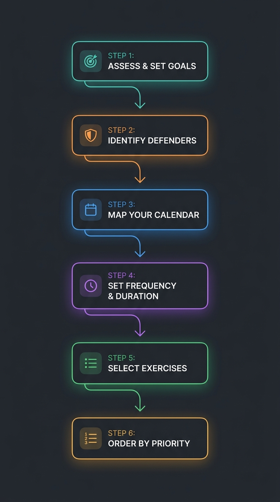
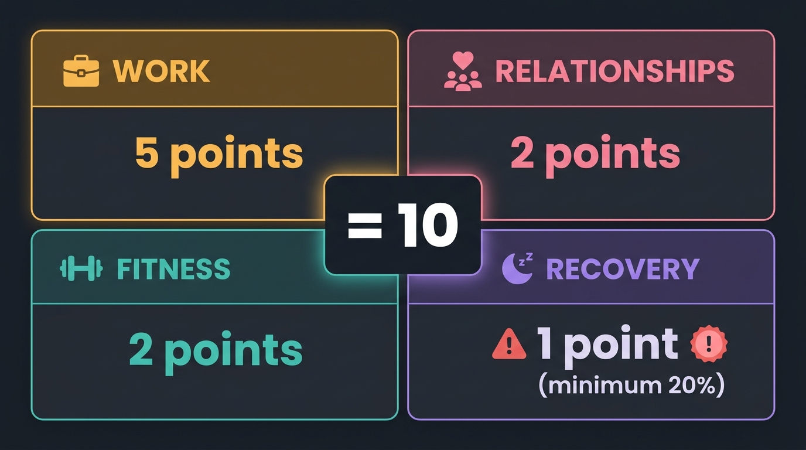
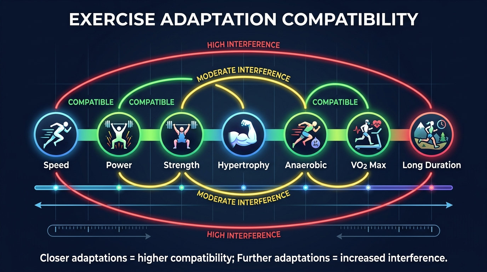
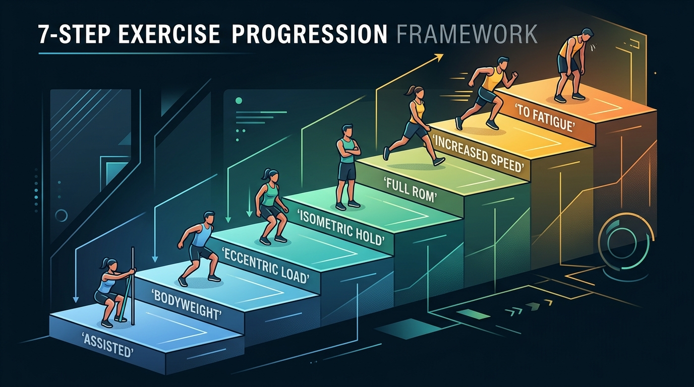

A plan you follow beats a perfect plan you don't
Episodes 1-3 covered what to train and how. This episode answers the harder question: how do you combine everything into a program that actually works inside your real life?
Galpin identifies the two reasons people fail to get results despite training:
A specific, written plan solves both: structure drives consistency, and tracking drives progressive overload. The rest is details.
"Having a specific plan produces better results than not having one. Even a mediocre plan, followed consistently, beats a perfect plan you abandon." — Dr. Andy Galpin
Galpin's 6-step program design system

Assess & Set Goals
Run fitness tests from Episode 1. Your lowest score = your "performance anchor." Use SMART framework: specific, measurable, attainable, realistic, timely. Optimal difficulty = 5% beyond current baseline.
Identify Your Defenders
What specifically stops you? Injury, travel, family, inconsistency, knowledge gaps? Design the program around fixing this first. Allocate life into 4 quadrants (see below).
Map Your Calendar
Plot holidays, deadlines, travel, family events for the full training period. Build backwards around constraints, not against them. Life will always win — plan for it.
Set Frequency & Duration
How many days can you realistically train? Include travel, warm-up, shower (~2.5x workout time). Better to commit to 3 days reliably than 4 days with missed sessions.
Select Exercises
Choose movements you can execute safely and have access to. Balance across movement patterns. At least 1x/week targeting each priority area.
Order by Priority
Do what matters most first — both within each session and across the week. Put hardest training on your highest-energy day. Low-friction workouts on tough days.
The 10-point quadrant: where does fitness actually fit?

Before touching a workout plan, Galpin forces you to be honest about your life allocation. You have 10 points to distribute across four buckets — and they must add up to exactly 10.
Recovery has a hard floor: minimum 20% of total. If fitness gets 2 points, recovery must get at least 1. Sleep, downtime, social restoration — skip this and the other three quadrants collapse.
After setting your quadrant, use the "Drop Everything And ___" rule: pick 1-2 non-negotiable commitments. Examples: "Drop Everything And Train at 3pm" (D3AT), "No work after 7pm Thursday-Sunday." Print it. Put it on your phone background. Share it with someone who'll hold you accountable.
"Hard rules give you freedom. Non-negotiable commitments remove decision paralysis — they provide organizing force for the brain." — Dr. Andy Galpin
The psychology of goals that actually stick
Optimal goal difficulty: 5% beyond baseline
A deception study found that goals set at 5% beyond current ability produced the highest adherence. Too easy = quit from boredom. Too hard = quit from discouragement. Aim for "slightly scary but achievable."
Break annual goals into quarterly checkpoints
Example: 2% body fat loss/year → 0.5% per quarter. But front-load preparation: Q1 = movement quality and injury prevention (0% loss), Q2-Q3 = 0.5% each, Q4 = 1% (max effort after building capacity). Dopamine responds to "on track" signals — quarterly wins sustain motivation.
Set your timeline at 90% of what feels realistic
People overestimate what they can do. Subtract 10% from your "realistic" goal. If you think you can lose 10 lbs, plan for 9. You'll either hit it (dopamine boost) or get close (still progress). Overshooting destroys motivation.
What you can train together — and what fights

The nine adaptations aren't equally compatible. Proximity on the spectrum = compatibility. The further apart two adaptations are, the more they interfere with each other.
High compatibility: Speed + Power + Strength
These three can be trained in the same session with zero interference. Speed improves acceleration which aids force production. Power is literally speed × force.
Moderate: Strength + Hypertrophy
Complementary in early phases. But to maximize one, you must eventually sacrifice volume or intensity in the other. Can't optimize both simultaneously at advanced levels.
High interference: Endurance vs. Speed/Power/Strength
High-volume endurance (>30 min, >60% max HR) creates fatigue that compromises explosive work. Workarounds: reduce endurance volume, choose low-impact modalities (cycling > running), increase calories, prioritize recovery.
Fat loss: no interference
Fat loss is compatible with everything. Fatigue from any adaptation doesn't hurt fat loss — all training contributes to total carbon output. Multiple modalities work synergistically.
The 7-step exercise progression: earn the right to push hard

Before loading any exercise heavy or taking it to failure, you must pass through these gates in order:
Assisted
Can you do the movement with support? (Hands on bench for squat, band-assisted pull-up)
Bodyweight
Can you do it unassisted with no external load?
Eccentric load
Can you lower weight under control? (This is the injury-prevention gate)
Isometric hold
Can you pause and hold at the hardest position?
Full range of motion
Can you complete the full concentric + eccentric with load?
Increased speed
Can you execute with velocity while maintaining form?
Step 7: To fatigue — only after mastering all six steps above. This framework dramatically reduces both acute injury and chronic joint pain.
Three goal categories — find yours
Aesthetics + Longevity (~50% of people)
Lose fat, build muscle in specific areas, maintain strength and endurance. Long-term health is the priority. You want to look good, feel good, and live long. Most people are here — and that's the right place to be.
Strength & Muscle Gain (~20-30%)
Primary goal: get bigger and stronger. Health matters but isn't the main driver. Must ensure training doesn't damage health markers (blood pressure, joint integrity, cardiovascular fitness).
Endurance & Skill Activities (~20-30%)
Running, cycling, swimming, hiking, surfing, tennis, golf. Want to feel strong and vigorous doing these activities for years to come. Skill improvement and sustained energy are the goals.
Your bin determines how you balance the nine adaptations. Bin A spreads effort broadly. Bin B emphasizes strength/hypertrophy with maintenance cardio. Bin C prioritizes endurance with maintenance strength work.
5 Things to Remember
Design around your constraints, not against them
Map your calendar, identify your "defenders," and build training into the gaps. A 3-day program you actually do beats a 5-day program you abandon by week 3.
Recovery has a hard floor: 20%
The quadrant system forces honest allocation. Recovery isn't luxury — it's the foundation the other three quadrants rest on. Cut it and everything degrades.
Adjacent adaptations are compatible; distant ones interfere
Speed + power + strength train beautifully together. High-volume endurance fights speed and power. Fat loss is compatible with everything.
Earn the right to push hard (7-step progression)
Assisted → bodyweight → eccentric → isometric → full ROM → speed → fatigue. Skip steps and you'll pay with injury.
Do what matters most first
Priority exercises first in the session. Priority sessions on your highest-energy day. Low-friction work on tough days. Order determines outcomes.
Watch the Full Episode
- SMART goal framework in full — the complete breakdown of setting specific, measurable, attainable goals with the 5% difficulty sweet spot
- The 10-point quadrant exercise — how to honestly allocate your life across work, relationships, fitness, and recovery
- Interference effects deep dive — which adaptations fight each other, which are synergistic, and specific workarounds for combining endurance with strength
- "Drop Everything And ___" implementation — how to turn vague intentions into hard commitments with accountability structures
- The 7-step exercise progression — the complete safety framework from assisted movement to training to fatigue
- High-friction vs. low-friction day scheduling — how to match workout difficulty to your energy levels across the week